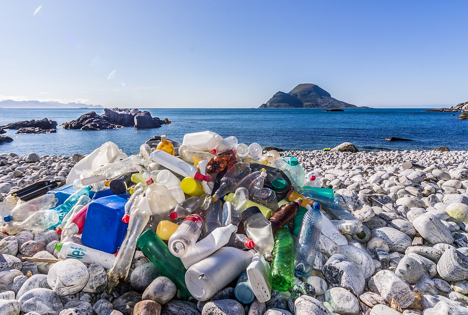
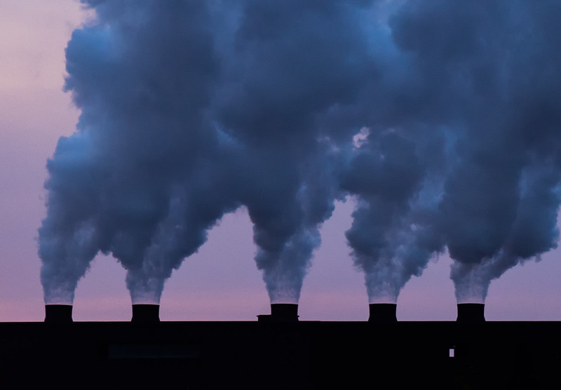
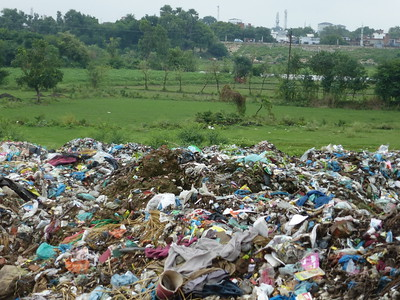

Many types of pollution but the 3 main forms:
- Water Pollution:
- Air Pollution
- Land Pollution
Water Pollution
Water pollution occurs in all types of bodies of water including lakes, oceans, rivers, and ground water. Plastics and other types of trash have killed and negatively impacted animals who come in contact with these products. Affects caused by trash in bodies of water include choking animals, suffocation from consuming,etc. Sadly, these events lead to death in most cases.
Not only trash like plastic is being put into the water, but also sewage, oils, and chemicals are extremely dangerous for both animals and humans. Many industries have placed pipes to dispose of their waste. Other companies have spilled oils into oceans or lakes when transporting it.
Water pollution is negatively impacting animals and humans all over the world by harmful chemicals, unsafe drinking water, harmful plastics, diseases, and death.
Air Pollution
Air pollution is a worldwide phenomenon caused by fossil fuel emissions, car emissions, coal-fueled power plants, industrial buildings, wildfires, and anything other sorts of chemicals being emitted into the atmosphere.
Air pollution has increased rapidly as technology has developed. Industrial buildings, which produce gaseous fumes, are one of the main sources of this issue. The other large air pollution producer is unfortunately apart of most of our transportation, our cars. Cars emit fossil fuels into the air that are unsafe to inhale too much of which cause further health issues over time.
There is an unfortunately large list of the negative affects of air pollution, and out of all of the types of pollution, air pollution causes very serious illnesses and diseases. Diseases that have been proven to occur in people from long term exposure to these emissions include heart disease, lung cancer, and respiratory diseases such as emphysema. Air pollution can also cause long-term damage to people's nerves, brain, kidneys, liver, and other organs.
Land Pollution
Land pollution is unfortunately something we come across everyday, wether it is on the side of the streets, or even on your front yard. Apparently, putting your trash in the trash bin is not easy enough for people. Land pollution is being caused mostly by littering. Littering is the practice of throwing trash into the environment instead of properly disposing it.
Unfortunately, humans contribute to land pollution every single time we get our trash taken to the landfills. Humans do produce alot of waste through foods, containers, and everyday products. Trash will never be eliminated from landfills completely, but it can be reduced largely by reusing, reducing, and recycling.
Did you know?
- In 2022, about 66 million tons of pollution were emitted into the atmosphere in the United States.
- Worldwide, 2 billion people (26% of the population) do not have safe drinking water and 3.6 billion (46%) lack access to safely managed sanitation.
- 80% of the items on the landfills are recyclable
- 63% of the soil worldwide is affected by pollution.